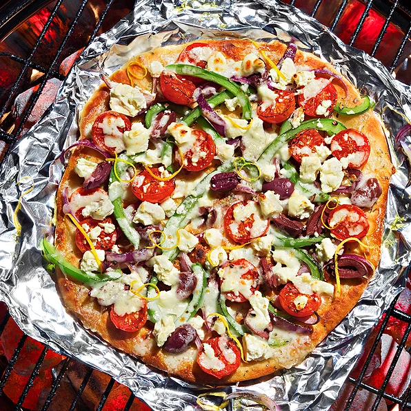

Greek Grilled Pizza from Reynolds Wrap®

This Greek grilled pizza requires minimal prep and is loaded with healthy ingredients. A perfect pizza for a summer party. Brought to you by Reynolds Kitchens®.
Ingredients
- 1 sheet Reynolds Wrap® Heavy Duty Aluminum Foil
- 1 (14 ounce) package pre-made pizza dough
- 2 tablespoons olive oil
- 1 tablespoon dried oregano
- 2 teaspoons lemon zest
- ½ green bell pepper, chopped
- ¼ red onion, chopped
- 8 cherry tomatoes, cut in half, or more to taste
- 8 kalamata olives, pitted and cut in half, or more to taste
- ½ cup crumbled feta cheese
- ½ cup shredded mozzarella cheese
- Salt and pepper
- Preheat grill to 450 degrees F. Roll or pat pizza dough into a 14-inch circle on a sheet of Reynolds Wrap Heavy Duty Aluminum Foil. Brush dough with olive oil.
- Sprinkle on oregano and lemon zest. Add green pepper, red onion, cherry tomatoes, olives, feta, and mozzarella. Season with salt and pepper to taste.
- Grill 15 to 20 minutes in covered grill over indirect heat.